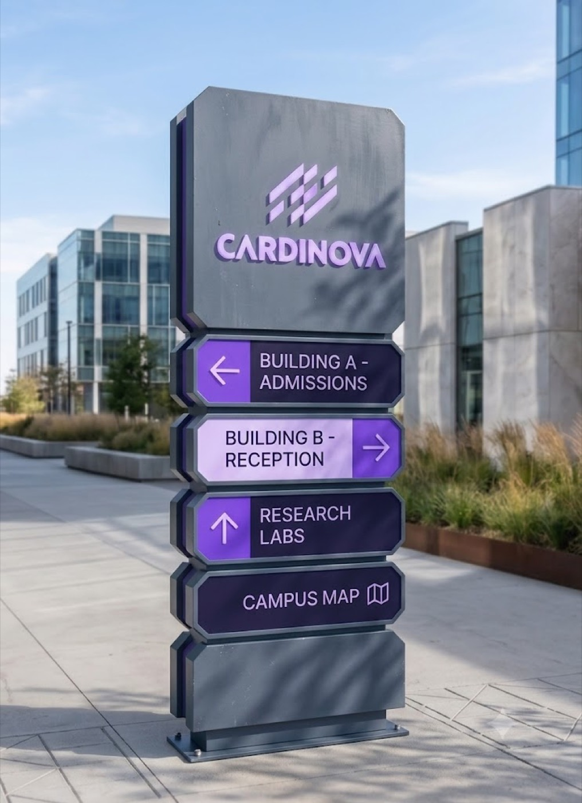

CASE STUDY · HealthTech
Cardinova
Una compañía de tecnología clínica que necesitaba proyectar confianza médica con una personalidad moderna y humana.

EL RETO
En salud, la confianza lo es todo — pero Cardinova no quería verse como un hospital genérico más. Buscaba rigor clínico con un aire contemporáneo y accesible.
QUÉ HICIMOS
Creamos un sistema en violetas y navy, un símbolo dinámico y una arquitectura de marca que funciona igual en un formulario médico, en señalética de campus o en producto digital.
EL RESULTADO
Una identidad que inspira confianza sin sacrificar modernidad — operativa en cada punto de contacto, del papel a la pantalla.
